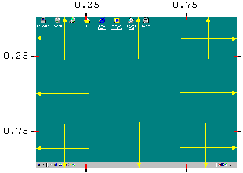
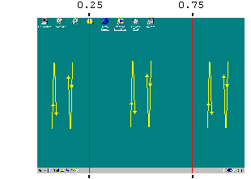
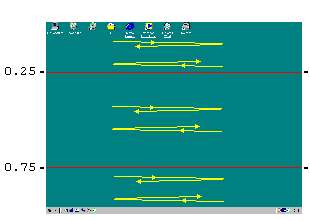

Launches the macro on mouse click, certain movements, etc. To assign this trigger, use the Properties dialog.
1. Fast mouse movement (or double movement) to the screen edge. There are 12 active areas:

You can set required mouse speed in Options. If "Slow" is checked, trigger works even when you touch screen edge without speed.
2. Fast mouse movements (or double movements) in one of 3 vertical areas (move up-down or down-up) and 3 horizontal areas (move toleft-toright or toright-toleft):


Mouse movements must be sharp (like , but not like or ), not too slow and not too fast (about 0.2 s). You can set required amplitude in Options.
3. Mouse left, right, middle, X1 or X2 button click or double click.
You can make a trigger specific to certain parts of window (caption, minimize button, etc). To make it specific to controls or other conditions, use filter functions.
If "Eat" is checked, mouse click messages are not passed to the application.
4. Mouse wheel rotation forward or backward.
Mouse triggers can be used with modifier keys Ctrl, Shift and Alt.
Be careful when unchecking "When released". If it is unchecked, the macro starts while modifier keys and mouse button are still pressed. QM cannot reliably "eat" them. If the macro sends keys (key, paste/outp, str.setsel, str.getsel) or mouse buttons, they may be modified by trigger's modifier keys.
Two non-disabled macros should not have same mouse trigger, unless both are specific to a program, monitor, hit-code or other condition (see filter functions). On conflict, will run the macro that was above in the list of macros when QM was started or current file opened, or that is older.
If mouse triggers don't work in some windows (e.g. console windows in Windows Vista), or in some parts of some windows, check "Use low-level mouse hook" in Options. Also, when using low-level hook, mouse movement triggers work better when the program that receives mouse input is busy.
QM 2.2.0: Hit-test code sometimes can be different than in previous versions, although in most cases the same.